1 Support Vector Regression
Given training data \{x_i,y_i\}_{i=1}^n
Find w_1 and b
such that y=w_1+b optimally describes the data:
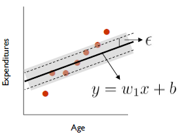The thinner the tube more complex the model.
- Lazy case (underfitting):
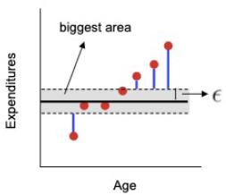 - Suspiciously smart case (overfitting):
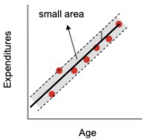 - Compromising case (good generalizability)
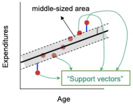
- Lazy case (underfitting):
Formulation:
\min_{w_1 ,b,\xi_i ,{\xi_i }^* } \frac{1}{2}w_1^2 +C\sum_i \left(\xi_i +\xi_i^* \right) subject to :
\begin{align*} y_i-(w_ix_{i1}) -b &\leq \epsilon +\xi_i \;\;\text{green line area below}\\ (w_ix_{i1}) +b -y_i&\leq \epsilon +\xi_i^* \;\;\text{red line area below}\\ \xi_i,\xi_i^*\ge 0 \quad & \quad i=1,2,\dots,n \end{align*} 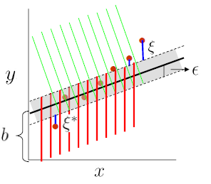 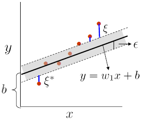 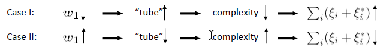
\epsilon controls width of the tube.Role of C
- Small C
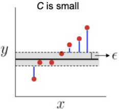 - Big C
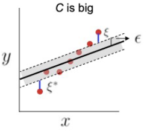
- Small C
1.1 Non-linear (Kernel) SVR
\min_{w_1 ,b,\xi_i ,{\xi_i }^* } \frac{1}{2}(w_1^2 +w_2^2 )+C\sum_i \left(\xi_i +\xi_i^* \right) subject to :
\begin{align*}
y_i-(\mathbf{w}'\phi( x_{i1})) -b &\leq \epsilon +\xi_i \\
(\mathbf{w}'\phi( x_{i1})) +b -y_i&\leq \epsilon +\xi_i^* \\
\xi_i,\xi_i^*\ge 0 \;&\; i=1,2,\dots,n
\end{align*}
1.2 SVR: Derivation
\min_{w_1 ,b,\xi_i ,{\xi_i }^* } \frac{1}{2}(\left\lVert \mathbf{w} \right\rVert)+C\sum_i \left(\xi_i +\xi_i^* \right) subject to :
\begin{align*}
y_i-(\mathbf{w}'\phi( x_{i})) -b &\leq \epsilon +\xi_i \\
(\mathbf{w}'\phi( x_{i})) +b -y_i&\leq \epsilon +\xi_i^* \\
\xi_i,\xi_i^*\ge 0 \;&\; i=1,2,\dots,n
\end{align*} Lagrangian: \begin{align*}
L:=\;&\frac{1}{2}(\left\lVert \mathbf{w} \right\rVert)+C\sum_i \left(\xi_i +\xi_i^* \right) \\
&-\sum_i(\eta_i\xi_i+\eta_i^*\xi_i^*)\\
&-\sum_i \alpha_i(\epsilon +\xi_i -y_i+(\mathbf{w}'\phi( x_{i})) +b )\\
&-\sum_i \alpha_i^*(\epsilon +\xi_i^* +y_i -(\mathbf{w}'\phi( x_{i})) -b )
\end{align*} Minimize with respect to \mathbf{w},b,\xi_i,\xi_i^*
Maximize with respect to \alpha_i,\alpha_i^*,\eta_i,\eta_i^*
1.3 SVR: Summary
1.3.1 Strengths of SVR
- No local minima
- Scales relatively well to high-dimensional data
- Trade-off between classifier complexity and error can be controlled explicitly via C and \epsilon
- Overfitting is avoided (for any fixed C and \epsilon)
- The “curse of dimensionality” is avoided through kernel functions
1.3.2 Weaknesses of SVR
- What is the best trade-off parameter C and best \epsilon ?
- What is a good transformation of the original space ?
2 Logistic Regression
To predict an outcome variable that is categorical from one or more categorical or continuous predictor variables.
Used because having a categorical outcome variable violates the assumption of linearity in normal regression.
Let X be the data instance, and Y be the class label: Learn P(Y\mid X) directly
- Let W = (W_1, W_2,\dots, W_n), X=(X_1, X_2, \dots , X_n), \mathbf W\cdot \mathbf X is the dot product
- Sigmoid function:
P(Y=1\mid \mathbf{X})=\frac{1}{1+e^{-\mathbf{WX}}}
Generative models, e.g., Naïve Bayes:
If we estimate P(X\mid Y),P(Y) from the data and use bayesian rule to find P(Y\mid X=x) it can be considered as generative modeling.
It can also generate the data P(X)=\sum_yP(y)P(X\mid y)Discriminative models, e.g., Logistic Regression:
If we estimate P(Y\mid X) directly from the data then it can be considered as discriminative modeling.In logistic regression, we learn the conditional distribution P(Y\mid X)
Let P_y(X;W) be our estimate of P(Y\mid X), where W is a vector of adjustable parameters.
Assume there are two classes, y = 0 and y = 1 and
P_1( \mathbf{X};\mathbf{W})=\frac{1}{1+e^{-\mathbf{WX}}} and P_0( \mathbf{X};\mathbf{W})=1-\frac{1}{1+e^{-\mathbf{WX}}} log odd \begin{align*} \log\frac{P_1( \mathbf{X};\mathbf{W})}{P_0( \mathbf{X};\mathbf{W})}&=\log\frac{\frac{1}{1+e^{-\mathbf{WX}}}}{1-\frac{1}{1+e^{-\mathbf{WX}}}}\\ &=\log\frac{\frac{1}{1+e^{-\mathbf{WX}}}}{\frac{1+e^{-\mathbf{WX}}-1}{1+e^{-\mathbf{WX}}}}\\ &=\log e^\mathbf{WX}\\ &=\mathbf{WX} \end{align*} That is, the log odds of class 1 is a linear function of \mathbf{X}We find \mathbf{W} using Conditional data likelihood — Probability of observed Y values in the training data, conditioned on corresponding X values.
We choose parameters \mathbf{W} that satisfy. \mathbf{W}=\argmax_\mathbf{W}\prod_lP(y^l \mid \mathbf{X}^l,\mathbf{W}) where
- w = <w_0,w_1,\dots,w_n> is the vector of parameters to be estimated,
- y^l denotes the observed value of Y in the l^{\text{th}} training example, and
- \mathbf{X}^l denotes the observed value of X in the l^{\text{th}} training example
Equivalently, we can work with log of conditional likelihood: \mathbf{W}=\argmax_\mathbf{W}\sum_l \ln P(y^l \mid \mathbf{X}^l,\mathbf{W})
Conditional data log likelihood, l(W), can be written as l(W)=\sum_l y^l \ln P(y^l=1 \mid \mathbf{X}^l,\mathbf{W})+(1-y^l) \ln P(y^l=0 \mid \mathbf{X}^l,\mathbf{W})
Note here that Y can take only values 0 or 1, so only one of the two terms in the expression will be non-zero for any given y^l
2.1 Training
- We need to estimate: \mathbf{W}=\argmax_\mathbf{W}\sum_l \ln P(y^l \mid \mathbf{X}^l,\mathbf{W})
- Equivalently, we can minimize negative log likelihood
- This is convex – so, unique global minimum
- No closed-form solution though. Iterative method required.
- Use gradient ascent (descent) for the maximization (min) problem
- The i^{\text{th}} component of the vector gradient has the form \frac{\partial }{\partial w_i }l\left(\mathbf{W}\right)=\sum_l x_i^l \left(y^l -\underbrace{\hat{P} \left(y^l =1\mid {\mathit{\mathbf{X}}}^l ,\mathit{\mathbf{W}}\right)}_{\text{Logistic regression prediction}}\right)
- Beginning with initial weights, we repeatedly update the weights in the direction of the gradient, changing the i^{\text{th}} weight according to w_i \leftarrow w_i+\eta \sum_l x_i^l \left(y^l -\hat{P} \left(y^l =1\mid {\mathit{\mathbf{X}}}^l ,\mathit{\mathbf{W}}\right)\right)
- Overfitting can arise especially when data has very high dimensions and is sparse
- One approach -> modified “penalized log likelihood function,” which penalizes large values of \mathbf{W}, as before. \mathbf{W}=\argmax_\mathbf{W}\sum_l \ln P(y^l \mid \mathbf{X}^l,\mathbf{W})-\frac{\lambda}{2}\left\lVert \mathbf{W} \right\rVert^2
- Derivative then becomes: \frac{\partial }{\partial w_i }l\left(\mathit{\mathbf{W}}\right)=\sum_l x_i^l \left(y^l -\hat{P} \left(y^l =1\mid {\mathit{\mathbf{X}}}^l ,\mathit{\mathbf{W}}\right)\right)-\lambda w_i
2.2 Summary
- In general, NB and LR make different assumptions
- NB: Features independent given class -> assumption on P(X\mid Y)
- LR: Functional form of P(Y\mid X), no assumption on P(X\mid Y)
- LR is a linear classifier
- decision rule is a hyperplane
- LR optimized by conditional likelihood
- no closed-form solution
- Concave (convex) -> global optimum with gradient ascent (descent)
- LR can be extended to multiple class using softmax.
3 Clustering
Types of Clustering Methods
- In terms of objective:
- Monothetic: cluster members have some common property
- E.g. All are males aged 20-35, or all have X% response to test B
- Polythetic: cluster members are similar to each other
- Distance between elements defines membership
- Monothetic: cluster members have some common property
- In terms of overlap of clusters
- Hard clustering: clusters do not overlap
- Soft clustering: clusters may overlap
- “Strength of association” between element and cluster
- In terms of methodology
- Flat/partitioning (vs) hierarchical: Set of groups (vs) taxonomy
- Density-based (vs) Model/Distribution-based: DBSCAN vs GMMs
- Connectionist (vs) Centroid-based: k-means vs Hierarchical clustering
Outline
- K-Means
- Hierarchical Clustering
- Graph-based/Spectral Clustering
- DBSCAN
- Model-based Clustering (GMM and Expectation Maximization)
- Evaluation of Clustering Algorithms
3.1 k-Means Clustering
- Partitional clustering approach
- Each cluster is associated with a centroid (center point)
- Each point is assigned to the cluster with the closest centroid
- Number of clusters, K, must be specified
- The basic algorithm is very simple
- Select K points as initial centroids
- Repeat:
- Form K clusters by assigning all point to the closest centroid
- Recompute centroid for each cluster.
- until The centroid doesn’t change.
- Initial centroids are often chosen randomly.
- Clusters produced can vary from one run to another.
- The centroid is (typically) the mean of the points in the cluster.
- ‘Closeness’ is measured by Euclidean distance, cosine similarity,correlation, etc.
- K-means will converge for common similarity measures mentioned above (local minimum though)
- Most of the convergence happens in the first few iterations.
- Often the stopping condition is changed to ‘Until relatively few points change clusters’
- Nearby points may not end up in the same cluster
3.1.1 Selecting Initial Centroids
How difficult is this?
- If there are K ‘real’ clusters then the chance of selecting one centroid from each cluster is small
- Chance is relatively small when K is large
- If clusters are the same size, n, then
\begin{align*} p&=\frac{\text{number of ways to select one centroid from each cluster}}{\text{Number of ways to select }K \text{ centroid}}\\ &=\frac{K!n^K}{(Kn)^K}\\ &=\frac{K!}{K^K} \end{align*} - For example, if K = 10, then probability = 10!/10^{10} = 0.00036
3.1.2 Possible Solutions
- Multiple runs
- Helps, but probability is not on our side
- Sample and use hierarchical clustering to determine initial centroids
- Select more than k initial centroids and then select among these initial centroids
- Select most widely separated
- Bisecting $K-means
- Not as susceptible to initialization issues
3.1.3 Evaluating k-Means Clusters
- Most common measure is Sum of Squared Error (SSE)
- For each point, the error is the distance to the nearest cluster
- To get SSE, we square these errors and sum them. \mathrm{SSE}=\sum_{i=1}^K\sum_{i\in C_i}\mathrm{dist}^2(m_i,x)
- x is a data point in cluster C_i and m_i is the representative point for cluster C_i
- Can show that m_i corresponds to the center (mean) of the cluster
- Given two clusterings, we can choose the one with the smaller error
- One easy way to reduce SSE is to increase K, the number of clusters
- A good clustering with smaller K can have a lower SSE than a poor clustering with higher K
- Relatively faster than other clustering methods: O( # iterations * # clusters * # instances * # dimensions )
3.1.4 Limitations
- k-Means has problems when clusters are of differing
- Sizes, Densities, Non-globular shapes
- Sensitive to outliers
- The number of clusters (K) is difficult to determine
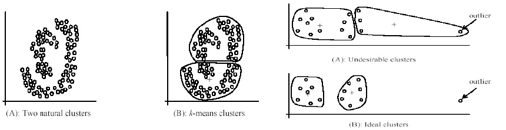
3.1.5 Extensions
- Use of various distance metrics
- Euclidean distance
d(x,y)=\sqrt{\sum_{i=1}^n \left\lvert x_i-y_i \right\rvert^2} - Manhattan (city-block) distance d(x,y)=\sum_{i=1}^n \left\lvert x_i-y_i \right\rvert
- Cosine distance \begin{align*} &\cos(x,y)=\frac{\sum_{i=1}^nx_iy_i}{\sqrt{\sum_{i=1}^nx_i^2}\sqrt{\sum_{i=1}^ny_i^2}}\\ &d(x,y)=1-\cos(x,y) \end{align*}
- Chebyshev distance \mathrm{dist}(x_i,x_j)=\max(\left\lvert x_{i1}-x_{j1} \right\rvert ,\left\lvert x_{i2}-x_{j2} \right\rvert ,\dots ,\left\lvert x_{ir}-x_{jr} \right\rvert)
- Euclidean distance
- k-Medioids
- Bisecting k-Means
- k-Means ++
3.2 Hierarchical Clustering
As we do not know how many clusters to use, so the idea of hierarchical clustering is to use all k clusters hierarchically.
Types of Clustering Methods
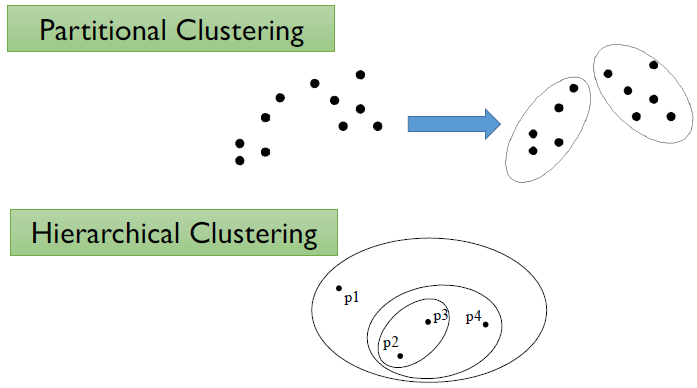
Hierarchical Clustering
- Produces a set of nested clusters organized as a hierarchical tree
- Can be visualized as a dendrogram
- A tree like diagram that records the sequences of merges or splits
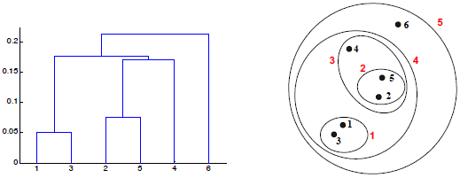
- A tree like diagram that records the sequences of merges or splits
3.2.1 Strengths
- Do not have to assume any particular number of clusters
- Any desired number of clusters can be obtained by ‘cutting’ the dendrogram at the proper level
- They may correspond to meaningful taxonomies
- Example in biological sciences (e.g., animal kingdom, phylogeny reconstruction, …)
3.2.2 Two main types of hierarchical clustering
- Agglomerative:
- Start with the points as individual clusters
- At each step, merge the closest pair of clusters until only one cluster (or k clusters) left
- Divisive:
- Start with one, all-inclusive cluster
- At each step, split a cluster until each cluster contains a point (or there are k clusters)
- Traditional hierarchical algorithms use a similarity or distance matrix
- Merge or split one cluster at a time
3.2.3 Agglomerative Clustering Algorithm
- More popular hierarchical clustering technique
- Basic algorithm is straightforward
- Compute the proximity matrix
- Let each data point be a cluster
- Repeat
- Merge the two closest clusters
- Update the proximity matrix
- Until only a single cluster remains
- Key operation is the computation of the proximity of two clusters
- Different approaches to defining the distance between clusters distinguish the different algorithms
3.2.4 Methodology
- Start with clusters of individual points and a proximity matrix (pairwise distance between each data point)
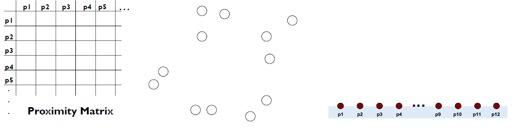 - After some merging steps, we have some clusters
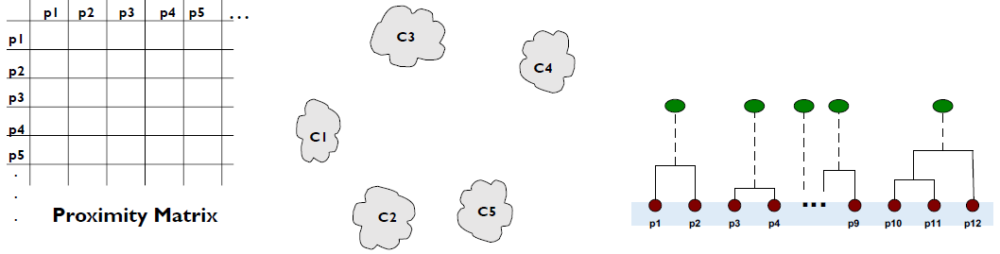 - We want to merge the two closest clusters (C2 and C5) and update the proximity matrix.
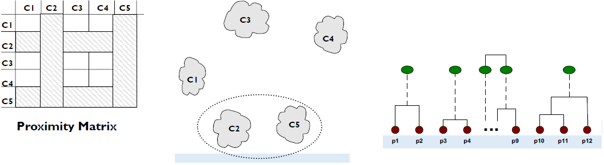 - The question is “How do we update the proximity matrix?”
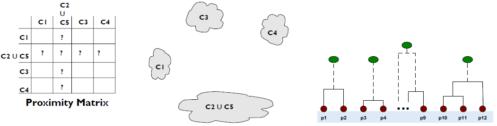
We can update the proximity matrix using Inter-cluster Similarity
3.2.5 Inter-cluster Similarity
- MIN (Single-link)
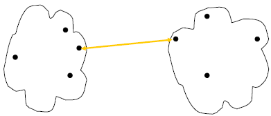 - MAX (Complete-link)
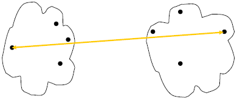 - Group Average (Average-link)
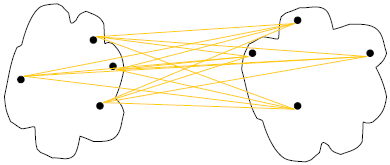 - Distance Between Centroids
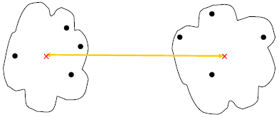
3.2.6 Limitations
- Once a decision is made to combine two clusters, it cannot be undone
- No objective function is directly minimized
- Different schemes have problems with one or more of the following:
- Sensitivity to noise and outliers (MIN)
- Difficulty handling different sized clusters and non-convex shapes (Group average, MAX)
- Breaking large clusters (MAX)
4 Graph-based/Spectral Clustering
- Associate each data item with a vertex in a weighted graph
- weights on the edges between elements are large if the elements are similar and small if they are not.
- Cut the graph into connected components with relatively large interior weights by cutting edges with relatively low weights.
- Clustering becomes a graph cut problem.
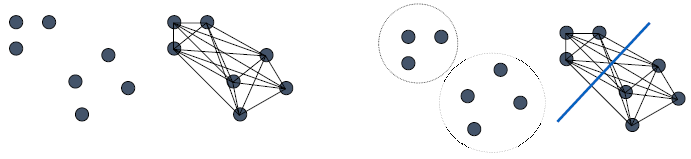